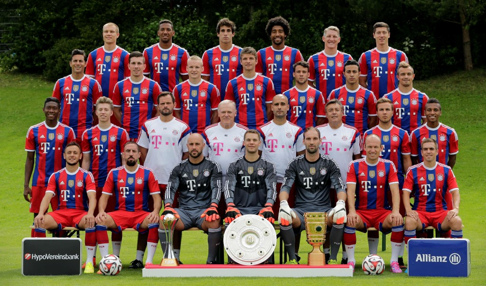

Bundesliga
Home
La Liga
Premier League
MLS
Soccer Fansite
Welcome To Our Site!
Contact Us

Fußball-Club Bayern München e.V., commonly known as FC Bayern München, FCB, Bayern Munich, or FC Bayern, is a German sports club based in Munich, Bavaria. It is best known for its professional football team, which plays in the Bundesliga, the top tier of the German football league system, and is the most successful club in German football history, having won a record 25 national titles and 17 national cups.*
On the left you will see the current teams standing in the league and their stats, the current roster for this season, the featured players picture and their stats for this season. On the bottom you can find the picture of the team's current roster as well.
Bayern Munich
*Source: Wikipedia
